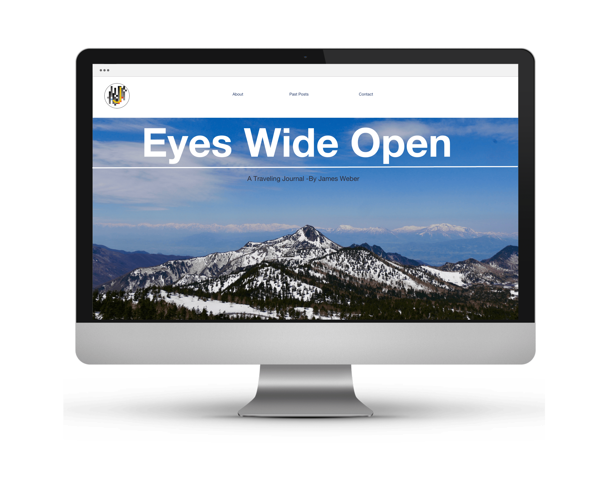
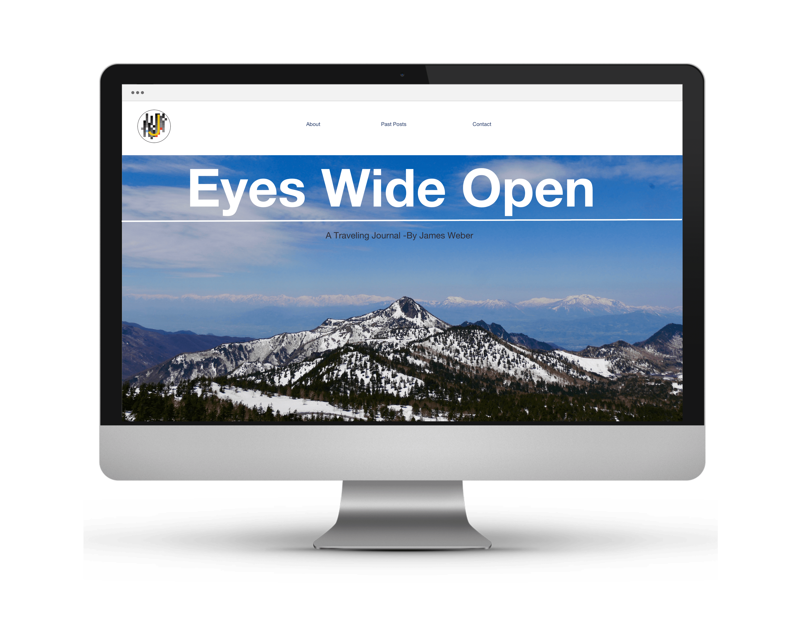
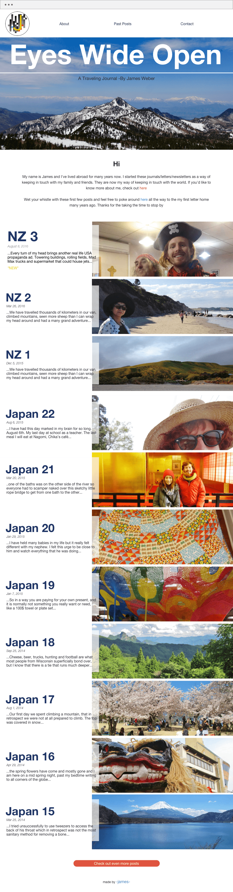
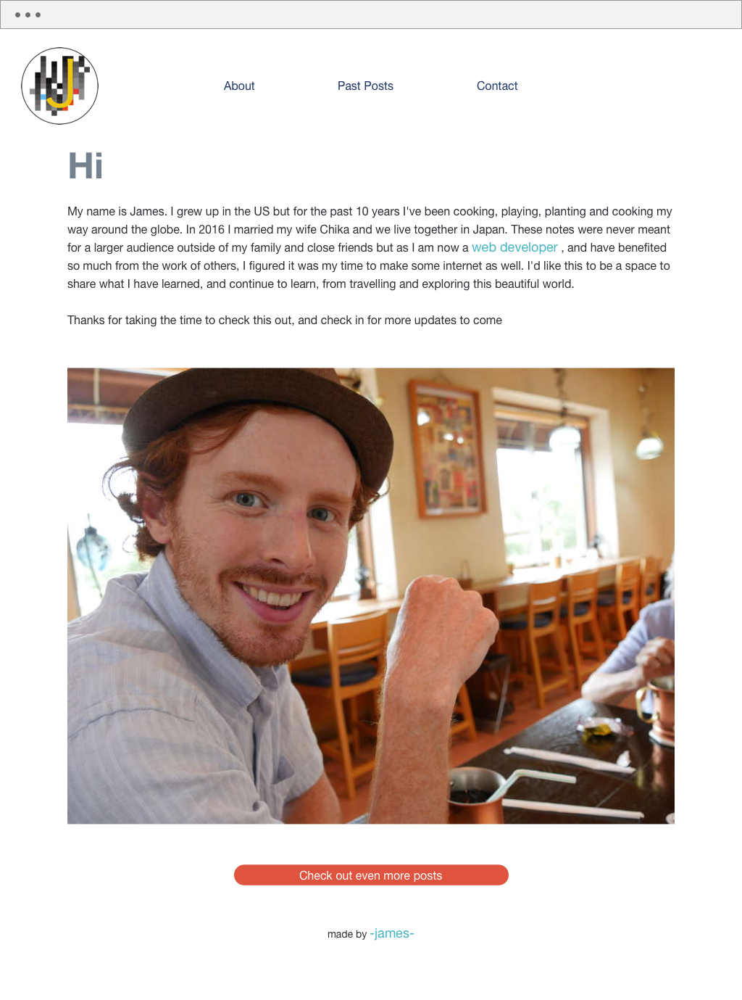
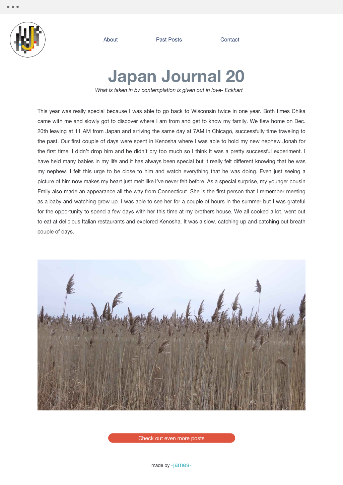
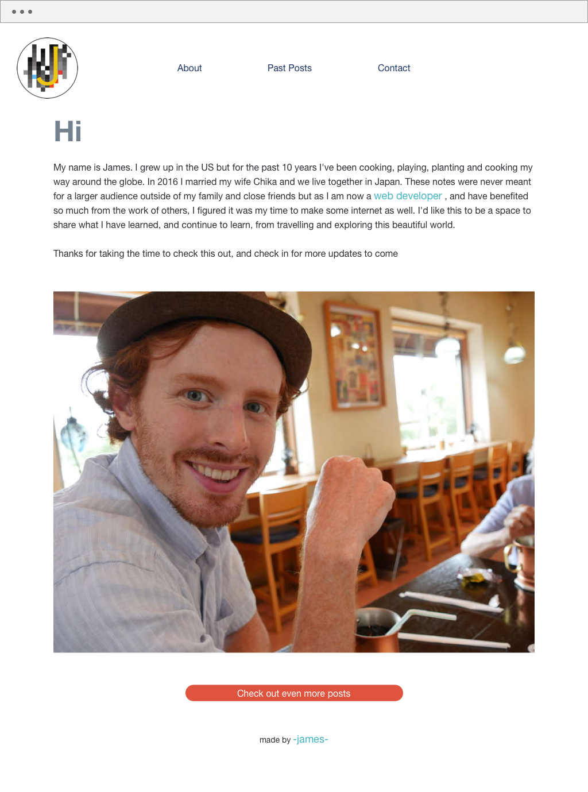
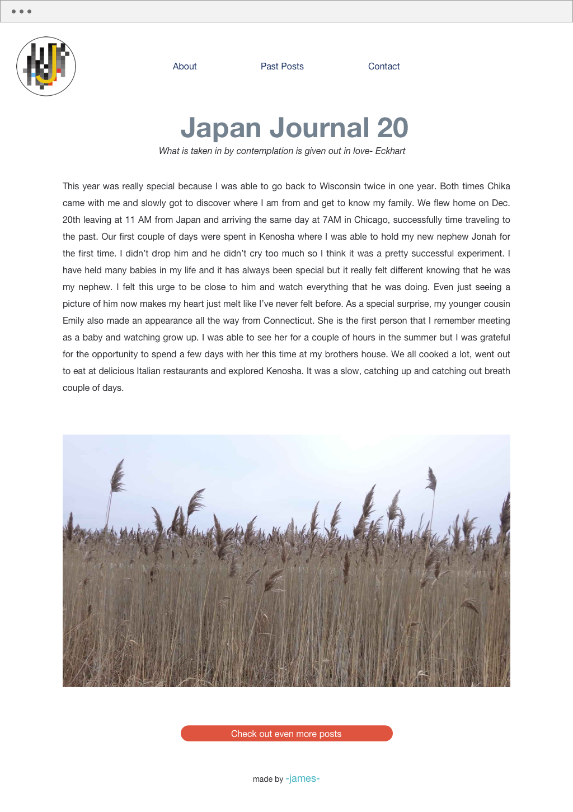

Design
An important part of my letters back home were the pictures that I took and I wanted to feature those on the home page. I wanted the pictures to be somewhat cut off so that people wanted to open the blog post to see the whole story. I also wanted to have a little text showing, without any context, so that the user would be drawn into opening up the blog to find out what it is I am refering to. All of the blog entries have the same basic format and this is where Jekyll really comes in handy. With Jekyll you can program a basic template that you want your posts to follow and Jekyll will compile any new post you make with the same format. And then to just give new users to my page some background I included a very simple about and contact page.

Responsive
It was important that my site be responsive and worked hard to make sure it would look great on all devices. This is a mobile-first site to try and keep load times down on mobile devices.

 

Publish
The world is a colorful place and I wanted that to come through when people visited my blog. I therefore wanted to feature, not necessarily the pictures from my blog posts but enough of a snippit so that their colors really lit up the screen. My original design lacked a defined welcome and jumped right into displaying the latest blog entry. Upon the advice of friends I added a clear welcome and explanation to the blog before jumping into displaying blog posts. I believe it gives the user a lot more information right away if it is the first time they are visiting. I also added a nice little effect where the pictures expand a bit as you hover over then, again inticing the user to enter into blog posts. Now that I am have a dedicated place to keep my posts I am very excited to keep on writing. I added Google analytics which allows me to watch in real time where people are reading my new blog posts. As I have readers from all over the world it is so much fun which country is getting the most users and how long they linger on certain pages. I am excited to see how this blog changes and evolves as I grow and learn as both a writer and programmer. Jekyll is very powerful and I feel like I have just hit the tip of the iceberg with all that it can do.
 


